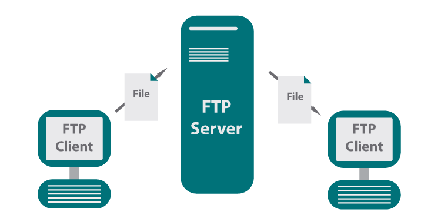

¿A que se llama FTP?
En su definición más simple, un Protocolo de transferencia de archivos (FTP, por sus siglas en inglés) es un método rudimentario para trasladar archivos de una ubicación en la red a otra. FTP surgió en los primeros días de las redes (1971), antes que las redes modernas de Protocolo de Internet (IP) basadas en TCP (Protocolo de control de transmisión) a principios de los 80.
Por mucho, FTP es la forma más popular de trasladar archivos a través de Internet. A partir de 2016, de las 4.3 billones direcciones IP estimadas en el espacio de direcciones IPv4, casi 22 millones eran servidores FTP. Incluso, los servidores FTP están integrados en cosas desde aplicaciones empresariales de llave en mano hasta impresoras.
¿Cómo funciona un Protocolo de transferencia de archivos?
FTP funciona con un modelo de cliente y servidor. Los archivos se suben desde un cliente FTP a un servidor FTP donde una aplicación o cliente pueden accederlos. El servidor FTP funciona con un daemon que está pendiente de solicitudes FTP de clientes.
Cuando el daemon FTP recibe una solicitud, el programa configura una sesión de control que le solicita iniciar sesión, y luego establece la conexión.
FTP permite dos maneras de iniciar sesión. En el modo autenticado, el cliente necesita verificar su identidad con un usuario y contraseña. En el modo anónimo, el cliente usa el usuario "ftp" o "anónimo" y proporciona un correo electrónico como contraseña. Una vez que se configure una sesión de control, el servidor ejecutará cualquier comando solicitado.
¿Es seguro transferir datos por medio de un protocolo FTP?
Por sí solo, no. La simplicidad de FTP es una de sus ventajas, pero también su mayor debilidad. Puede ser configurado para obtener acceso sin autenticación válida. Los archivos son almacenados sin cifrado, los datos son transferidos y pueden ser interceptados fácilmente por hackers y cibercriminales mientras recorre el Internet abierto.
A finales de 2016, había unos 750,000 servidores FTP 'anónimos' conectados a Internet. Estas son oportunidades de oro para los cibercriminales, ya que pueden establecer una sesión de control con mínimo esfuerzo. Al iniciar sesión con el usuario 'FTP' y contraseña de dirección de correo electrónico, tienen acceso al directorio de archivos cargados completo que aún residen en el servidor.
En marzo de 2017, el FBI envió una alerta a los equipos de seguridad en la industria de la salud para crear conciencia sobre los riesgos que plantean los servidores FTP al contener datos delicados como información médica protegida (PHI o Protected Health Information).
¿Necesita cifrado? Use FTPS, SFTP y HTTPS
A lo largo del tiempo, se agregaron tres opciones a las implementaciones de FTP: Secure Sockets Layer (SSL), Secure Shell (SSH) y HTTPS. Los tres son ampliamente utilizados para aumentar la seguridad y confiabilidad de las transferencias de archivos al usar cifrado para prevenir la visualización y modificación no autorizada de datos confidenciales durante la transmisión a través de redes abiertas.
¿Que es HTTPS?
HTTPS (protocolo de Transferencia de Hiper-Texto) es un protocolo que permite establecer una conexión segura entre el servidor y el cliente, que no puede ser interceptada por personas no autorizadas. En resumidas cuentas, es la versión segura de el http (Hyper Text Transfer Protocol)
Cómo funciona
Una conexión HTTP estándar en Internet puede ser fácilmente secuestrada por partes no autorizadas. El propósito de una conexión HTTPS es evitar esto: encriptar los datos para asegurar una transmisión de datos segura. La transmisión está encriptada y el servidor autenticado.
Cuando un usuario hace clic en un enlace o confirma una entrada de URL en la barra de direcciones con el botón Enter, el navegador establece una conexión. El servidor presenta un certificado que lo autentica como un proveedor genuino y confiable. Una vez que el cliente ha verificado la autenticidad, envía una clave de sesión que sólo puede leer el servidor. Sobre la base de estos datos clave, ahora se puede realizar el cifrado. Normalmente, se utiliza un certificado SSL.
Uso y relevancia
HTTPS se utiliza para todos los sitios web en los que un usuario introduce datos. Un campo de aplicación importante es la banca online. En cualquier lugar donde se utilice una cuenta protegida por contraseña, sería sensato tener una conexión
HTTPS Esto incluye el acceso a redes sociales, o cuentas de correo electrónico y de compras, en las que de otro modo se podría causar un gran daño personal con la adquisición ilegal de datos personales. La información personal también puede ser enviada sin una cuenta. Si, por ejemplo, un vuelo o unas vacaciones enteras se reservan en línea, entonces los datos aplicables deben ser comunicados a los proveedores de una manera segura.
En su propio interés, cualquier usuario de Internet debe prestar atención a una conexión segura en el lugar correcto y así proteger su privacidad. Si existe una conexión HTTPS se puede ver fácilmente en la barra de direcciones. Mostrará "https" al principio e incluso se resalta en muchos casos. También se muestra un pequeño icono de candado.
Desventajas
El HTTPS tiene algunas desventajas en comparación con las conexiones HTTP. Sin embargo, son muy pocas y deberían aceptarse como un compromiso por la seguridad que proporcionan.
Ventajas
Además de la ventaja obvia de la privacidad en línea, también hay otro pro. El uso de HTTPS no requiere ninguna instalación de software adicional. Esto significa que puede ser utilizado sin restricciones por cualquier persona. La autenticación con un certificado también inspira confianza en los clientes potenciales.
Diferencia con HTTP
La principal diferencia es la seguridad. La tecnología es esencialmente la misma, pero HTTPS incluye encriptación SSL. Por lo tanto, en principio es posible establecer todo Internet con conexiones HTTPS. Sin embargo, debido a las desventajas antes mencionadas y por costumbre, casi nadie utiliza una conexión segura cuando no es absolutamente necesaria
Seguridad
Dado que la diferencia con el HTTP es el uso de cifrado, la seguridad HTTPS depende únicamente de la técnica de cifrado utilizada. Actualmente se trata de SSL, que generalmente se considera segura. Sin embargo, debe tenerse en cuenta que una transmisión de datos segura por sí sola no es suficiente para protegerlos completamente, sino que también debe ser almacenada de forma segura por el destinatario.